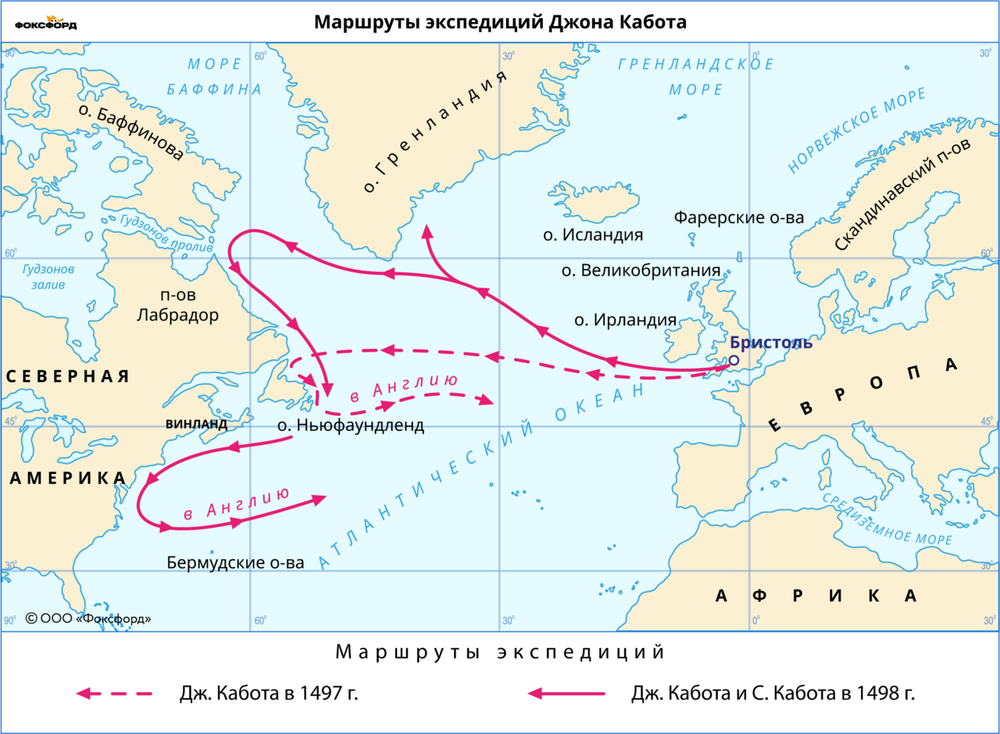
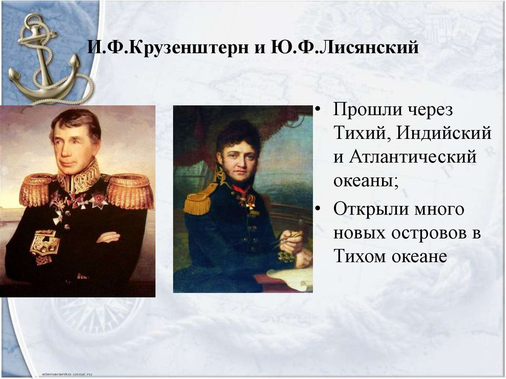

В конце XV — начале XVI в. в Западной Европе появлялись большие и сильные государства, развивались ремёсла, торговля, речной и морской флот. Для дальнейшего развития стран потребовалось новое сырьё, новые товары, новые торговые пути. В результате европейцы отправились в далёкие путешествия для открытия новых земель. Это историческое время получило название Великие географические открытия.
Плавание Джона Кабота и второе открытие Америки с северо-востока в 1497 г. Итальянский купец Джованни Кабота много лет торговал товарами, которые доставляли из Индии другие купцы. Кабота считал, что Земля имеет форму шара и, следовательно, можно добраться до Индии, отправившись из Европы на запад через океан. После первого плавания Христофора Колумба Кабота предложил испанскому и португальскому королям план новой экспедиции. Кабота запланировал плыть в Индию севернее, следовательно, более коротким путём. Получив отказ в двух королевствах, Кабота переехал в Англию, где его стали звать Джоном Каботом. Город Бристоль, в котором поселился Кабот, был центром рыбной ловли, а также единственным английским портом, откуда отправлялись экспедиции в Атлантику. Путешественнику удалось организовать экспедицию с целью открытия новых земель. В 1497 г. единственный корабль Кабота отправился на запад. Его путь проходил севернее 50-й параллели, что значительно севернее маршрута Христофора Колумба. На пути корабля даже встречались айсберги, но Каботу удалось достигнуть неизвестной новой земли — острова Ньюфаундленд. Ещё одно открытие — огромная отмель вблизи острова: Большая Ньюфаундлендская банка. Это один из самых богатых рыбой районов Атлантического океана. Джон Кабот благополучно вернулся в Англию, совершив второе после викингов открытие Северной Америки с северо-востока.
Благодаря путешествиям Х. Колумба, Васко да Гамы и многих других, европейцы узнали о существовании новой части света — Америки, расширили знания о природе и жителях западного и восточного берегов Африки, узнали морской путь в Индию. В эпоху Великих географических открытий состоялись первые кругосветные плавания. Европейцы не только открыли новые земли, получили новые знания об океанах и их размерах, но и убедились в шарообразности Земли. В результате сделанных географических открытий сформировались представления о Старом Свете — Европе, Азии и Африке, и Новом (для европейцев) Свете — Америке. Мы знаем об эпохе Великих географических открытий и её путешественниках из многочисленных источников — дневников путешествий, писем, государственных документов, географических карт.
.webp)
.webp)
Крузенштерн Иван - это наш русский мореплаватель. Он исследовал малую часть Курильских островов и открыл новый путь к Аляске и Камчатке ещё он исправил географические карты. Ю.Ф. Лисянский тоже русский мореплаватель он открыл Гавайские острова и он вместе с Крузенштерном Иваном совершили кругосветную экспедицию
